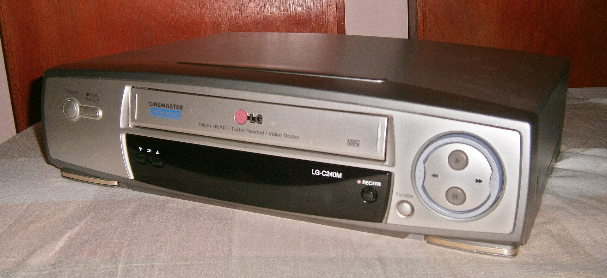

VHS

Origins
While video tape recorders existed before the VCR like Ampex Corporation's Ampex VRX-1000 in the late' 50s.
Unfortunately, it was a large device that was sold for a then $50,000. It was also available only in professional settings.
Around this time, JVC vice president Kenjiro Takayanagi wanted to make an affordable device for the household.
In 1969, JVC collaborated with Sony and Matsushita Electric (present-day Panasonic)
to build a video recording standard for JVC. Together, they built the U-Matic Tape Format. It was successful and
used for broadcast companies and electronic news gatherings. Unfortunately, it was limited for home use because of the tape's limited storage and cost.
Soon, VCRs started to makes its way in Japan and the United States in 1976 and 1978. Sparking interest in video distribution and would change the path for home entertainment.
VHS Technical Details
- - 187 mm wide
- - 103 mm deep
- - 25 mm thick
- - Mylar Magnetic Tape
VHS Recording Process
To make home movies ona VHS tape, here are the six steps. Don't reproduce other copyrighted works.
- The tape is pulled from the supply reel by a capstan and pinch roller, similar to those used in audio tape recorders.
- The tape passes across the erase head, which wipes any existing recording from the tape.
- The tape is wrapped around the head drum, using a little more than 180 degrees of the drum.
- One of the heads on the spinning drum records one field of video onto the tape, in one diagonally oriented track
-
The tape passes across the audio and control head, which records the control track and the linear audio tracks.
- The tape is wound onto the take-up reel due to torque applied to the reel by the machine.
Top 3 Best Selling Films (on VHS) in the United States
| Film |
Copies Sold |
| The Lion King |
32,2000,000 |
| Aladdin (1992) |
30,000,000 |
| Snow White and the Seven Dwarfs (1937) |
28,000,000 |
VHS Benefits
- Intimacy with the Story
- Cultural Value
- Durability
VHS Tapes were the first form of media that people can have ownership on a piece of cultural heritage.
It also allowed filmmakers to store their filmed footage in their home,
unlike film reels where they need to be in cool rooms.
VHS Cons
- Slow Writing Speeds
- VCRs uses analog video like mixed luminance and color signals. It has lead to visible noise, color bleed, and reduce sharpness in the image.
-
- Physical Limitations
- VHS tapes can only go forward or backwards. You can't skip as a DVD would. It also takes a lot of time to rewind or fast forward, whether you turn off the video on the VCR or rewinding from the start on a VHS rewinder.
- Poor Image Quality
- VHS tapes are larger and have some weight to it. It's an obstacle to shelve overtime and limits the number of tapes you can store.
Copyright (c) Edward Frumkin 2026